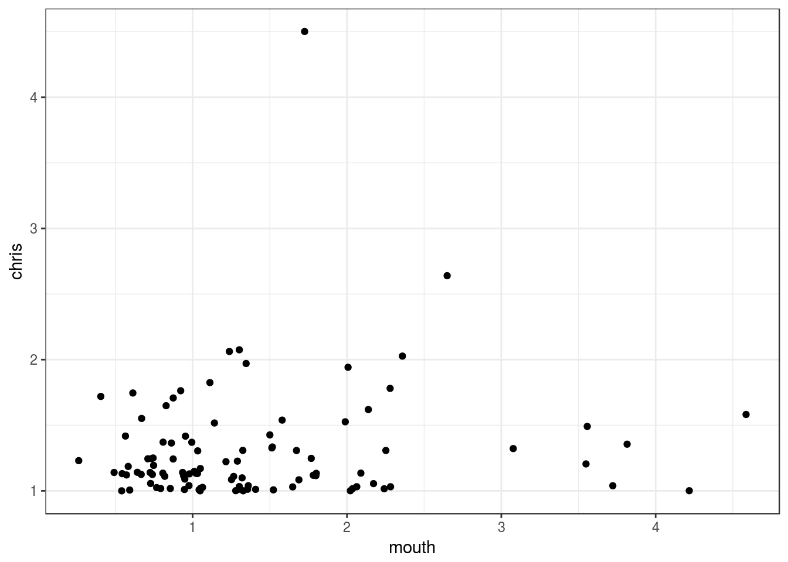
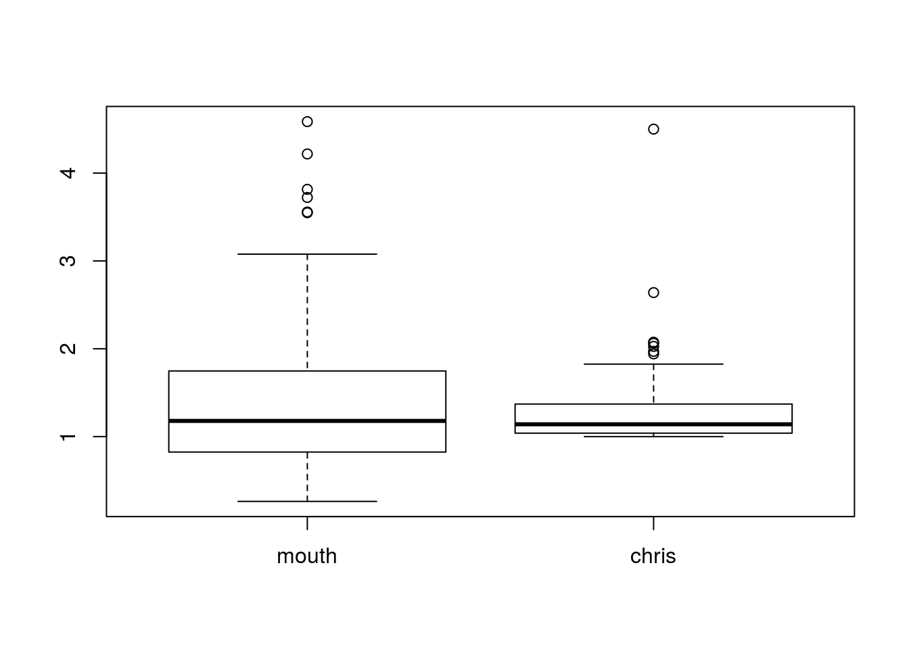
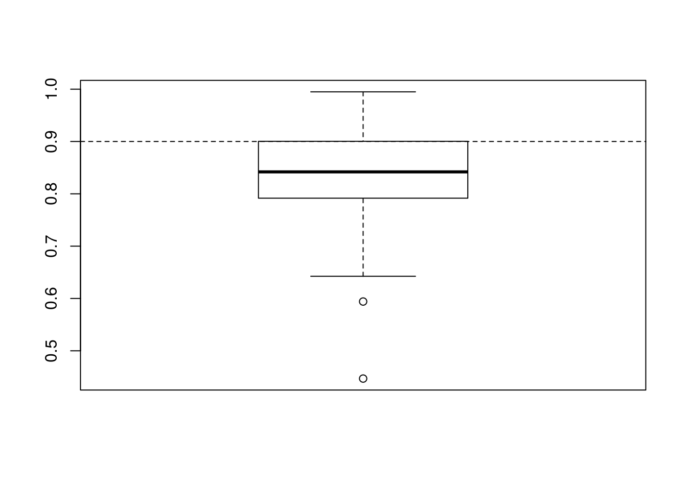
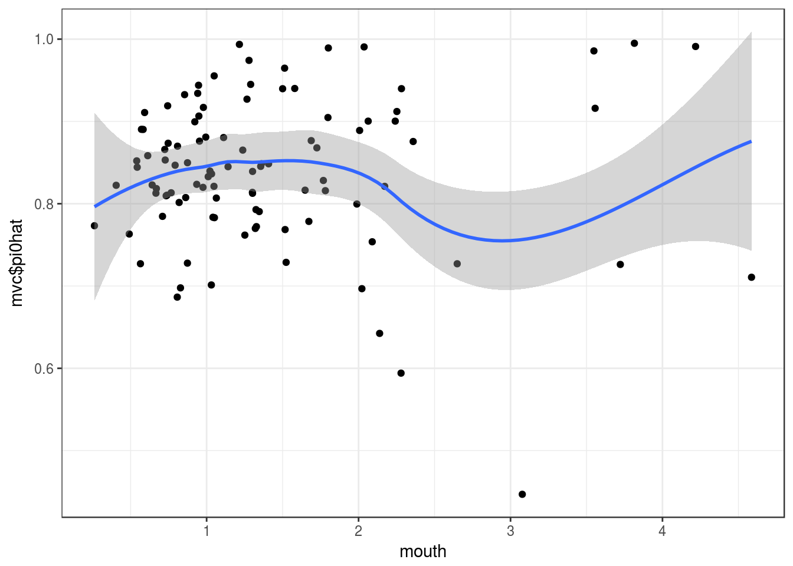

Using the notation from Gerard and Stephens (2017), the second step of MOUTHWASH uses the model \[ \hat{\beta} \sim N_p(\beta + \hat{\alpha}^Tz, \xi \Sigma / \|x\|^2), \] where \(\Sigma = diag(\hat{\sigma}_1^2,\ldots,\hat{\sigma}_p^2)\). In Chris’ write-up, he proposes fitting \[ \hat{\beta} \sim N_p(\beta + \hat{\alpha}^Tz, [1/\|x\|^2 + \|z\|^2 / (n-1)]\Sigma). \] As a first step to see if Chris’ idea is correct, we will see if the variance inflation factors approximately equal each other (or are at least correlated): \[ \xi/\|x\|^2 \approx 1/\|x\|^2 + \|z\|^2 / (n-1)\\ \Leftrightarrow \xi \approx 1 + \|x\|^2\|z\|^2 / (n-1). \]
This is easy to check using the current implementation of MOUTHWASH.
library(vicar)
library(seqgendiff)
library(sva)
hdat <- as.matrix(read.csv("../data/heart.csv")[, -c(1, 2)])set.seed(3)
num_sim <- 100
chris_vec <- rep(NA, length = num_sim)
mouth_vec <- rep(NA, length = num_sim)
pihat_vec <- rep(NA, length = num_sim)
for (index in 1:num_sim) {
cat("Iteration:", index, "\n")
num_sv <- 0
while(num_sv == 0) {
## Simulate some data
simdat <- poisthin(mat = t(hdat), nsamp = 10, ngene = 1000, prop_null = 0.9)
num_sv <- num.sv(dat = t(simdat$Y), mod = simdat$X)
}
## Fit MOUTHWASH
mout <- mouthwash(Y = simdat$Y, X = simdat$X, cov_of_interest = 2, k = num_sv, detailed_output = TRUE)
## Calculate Chris' variance inflation factor
xnorm <- mout$extra$rotate_out$R22^2
znorm <- sum(mout$z2 ^ 2)
inflate_chris <- 1 + xnorm * znorm / (nrow(simdat$X) - ncol(simdat$X))
chris_vec[index] <- inflate_chris
mouth_vec[index] <- mout$xi
pihat_vec[index] <- mout$pi0
}
saveRDS(list(chris = chris_vec, mouth = mouth_vec, pi0hat = pihat_vec), "../output/chris/mvc.RDS")There seems to be almost no relationship between the two variance inflation factors:
library(tidyverse)## Loading tidyverse: ggplot2
## Loading tidyverse: tibble
## Loading tidyverse: tidyr
## Loading tidyverse: readr
## Loading tidyverse: purrr
## Loading tidyverse: dplyr## Conflicts with tidy packages ----------------------------------------------## filter(): dplyr, stats
## lag(): dplyr, statsmvc <- readRDS("../output/chris/mvc.RDS")
mouth <- mvc$mouth
chris <- mvc$chris
qplot(mouth, chris) + theme_bw()
cor(mouth, chris)## [1] 0.1227cor(mouth, chris, method = "kendall")## [1] 0.02182boxplot(mouth, chris, names = c("mouth", "chris"))
Though, the MOUTHWASH inflation factors have about the same median as the Chris inflation factors, but tend to be more dispersed.
median(mouth)## [1] 1.178median(chris)## [1] 1.14sd(mouth)## [1] 0.845sd(chris)## [1] 0.4453It seems that MOUTHWASH isn’t inflating the variances enough to get to a pi0 estimate of 0.9.
boxplot(mvc$pi0hat)
abline(h = 0.9, lty = 2)
Interestingly, there doesn’t seem to be a strong association between how much MOUTHWASH inflates the variances and the resulting estimates of pi0.
qplot(mouth, mvc$pi0hat) + theme_bw() +
geom_smooth()
sessionInfo()## R version 3.3.2 (2016-10-31)
## Platform: x86_64-pc-linux-gnu (64-bit)
## Running under: Ubuntu 16.04.3 LTS
##
## locale:
## [1] LC_CTYPE=en_US.UTF-8 LC_NUMERIC=C
## [3] LC_TIME=en_US.UTF-8 LC_COLLATE=en_US.UTF-8
## [5] LC_MONETARY=en_US.UTF-8 LC_MESSAGES=en_US.UTF-8
## [7] LC_PAPER=en_US.UTF-8 LC_NAME=C
## [9] LC_ADDRESS=C LC_TELEPHONE=C
## [11] LC_MEASUREMENT=en_US.UTF-8 LC_IDENTIFICATION=C
##
## attached base packages:
## [1] stats graphics grDevices utils datasets methods base
##
## other attached packages:
## [1] dplyr_0.7.4 purrr_0.2.4 readr_1.0.0 tidyr_0.7.2
## [5] tibble_1.3.4 ggplot2_2.2.1 tidyverse_1.1.1
##
## loaded via a namespace (and not attached):
## [1] Rcpp_0.12.14 plyr_1.8.4 bindr_0.1 forcats_0.2.0
## [5] tools_3.3.2 digest_0.6.13 lubridate_1.6.0 jsonlite_1.5
## [9] evaluate_0.10.1 nlme_3.1-131 gtable_0.2.0 lattice_0.20-34
## [13] pkgconfig_2.0.1 rlang_0.1.4 psych_1.6.12 yaml_2.1.16
## [17] parallel_3.3.2 haven_1.0.0 bindrcpp_0.2 xml2_1.1.1
## [21] httr_1.3.1 stringr_1.2.0 knitr_1.17 hms_0.3
## [25] rprojroot_1.2 grid_3.3.2 glue_1.2.0 R6_2.2.2
## [29] readxl_0.1.1 foreign_0.8-67 rmarkdown_1.6 modelr_0.1.0
## [33] reshape2_1.4.2 magrittr_1.5 backports_1.0.5 scales_0.4.1
## [37] htmltools_0.3.6 rvest_0.3.2 assertthat_0.2.0 mnormt_1.5-5
## [41] colorspace_1.3-2 labeling_0.3 stringi_1.1.6 lazyeval_0.2.0
## [45] munsell_0.4.3 broom_0.4.2This R Markdown site was created with workflowr